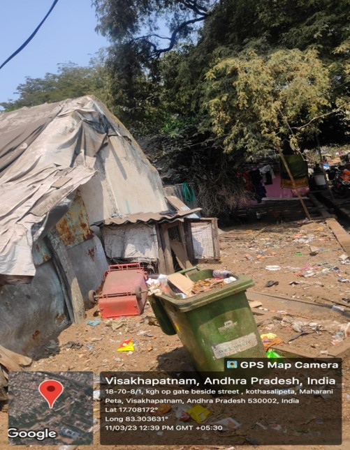

Kotha Salipeta

Kotha Salipeta is a slum area located in the city of Visakhapatnam, Andhra Pradesh, India, which falls under the jurisdiction of GVMC (Greater Visakhapatnam Municipal Corporation). Like many other slum areas in India, Kotha Salipeta faces a range of challenges that affect the well-being of its residents.
Major Problems
- Lack of basic amenities: Access to clean water, electricity, and proper sanitation facilities is limited in Kotha Salipeta, making it difficult for residents to maintain good hygiene and sanitation practices
- Inadequate healthcare: Medical facilities in Kotha Salipeta are often limited and of poor quality, which can limit access to healthcare for residents.
- Vulnerability to natural disasters: Kotha Salipeta is located in a low-lying area near the coast, which makes it vulnerable to flooding and other natural disasters, especially during monsoon season
- Limited educational opportunities: Many children in kotha salipeta do not attend school due to the lack of resources and access to quality education, which can perpetuate the cycle of poverty